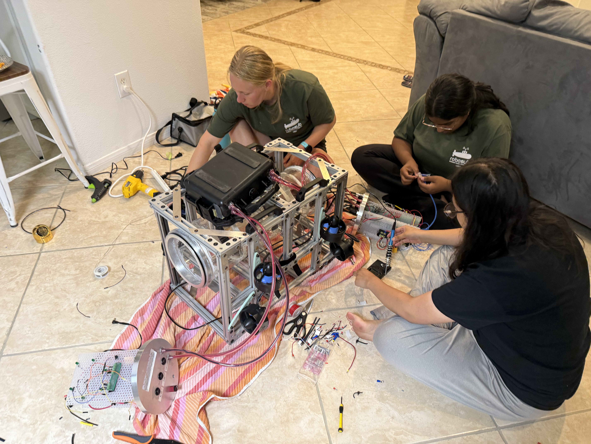

I designed the electrical core of Swim Shady: the Actuator PCB, which powers and drives all eight thrusters and the servos, and the Battery Management Board (BMB), which protects two LiPo packs and generates every supply rail on the vehicle. On both boards I created the complete schematic in Altium Designer and did the majority of the layout. I also taught the teammates who laid out the remaining sections and reviewed all of their work.
2 boardsFull schematic ownership, start to finish
30 A / bus4-layer, high-current layout sized to IPC-2221
Fail-safeHardware protection that works without firmware
MentorTrained new Altium users and reviewed their layouts
Actuator PCB
Thruster power & control · 4-layer · Altium Designer
The Actuator PCB powers and controls all eight thrusters and the servo systems. It integrates eight Blue Robotics ESCs, per-channel fusing and current sensing, a fail-safe magnetic kill switch, and a PCA9685 PWM driver that turns I²C commands from the NVIDIA Jetson into control signals for every actuator.
8 thruster channels across two isolated battery domains (4 ESCs each, shared ground)
Up to 30 A per battery bus, 10 A per thruster channel
4-layer stackup: 1 oz outer / 0.5 oz inner copper
9 Kelvin-sensed current channels with dedicated amplifiers
Individual fuse and status LED on every channel
ESCs mounted on both sides of the board for a compact footprint
The kill-switch schematic page. Every block carries notes on its purpose, its operating states and the current-draw math, so a reviewer can follow the design without me there. Click any image to view it full size.
Engineering highlights
Fail-safe high-side kill switch. A Hall-effect sensor drives a MOSFET inverter stage, which switches paralleled P-channel power MOSFETs (D2PAK) on each battery rail. If the sensor is unplugged or the logic supply drops, the robot shuts off. I redesigned the gate drive so the sensor sinks only 0.3 mA. That allowed a pull-up 10× smaller and made turn-off about 10× faster, so the MOSFETs spend less time in their high-dissipation linear region.
Gate & transient protection. A resistor divider holds VGS at about −14.7 V on a fully charged 4S pack, inside the ±20 V rating, with 15 V Zener clamps as backup. TVS diodes on each battery input absorb the inductive spikes from cutting power under load, from hot-plugging and from motor back-EMF.
High-current layout. Copper is sized to IPC-2221 for the fab's copper weights. Every battery and ESC path is a polygon pour, high-current nets use direct-connect pads, and via arrays feed two inner ground planes that carry the combined return current of both batteries.
Precision sensing in a noisy environment. The shunt sense lines use Kelvin connections, routed as tight pairs away from the motor phase traces and moved to an inner layer where needed so the high-current copper stays unbroken.
24 motor phases, zero crossings. BLDC phase order doesn't matter because direction is corrected in software. I used that to reassign connector pins and turn a tangle of 24 phases into a nested, planar route.
Design for manufacturing. I built the stackup and design rules from OSH Park's published capabilities, ran full DRC, and used schematic-driven net classes so the rules carry through design changes. I also caught a vendor footprint pin-mapping error that would have shorted a battery.
Battery Management Board (BMB)
Power distribution & protection · Altium Designer
The BMB fuses, protects and monitors two independent 4S LiPo packs (13.2–16.8 V) and generates six regulated rails for the logic, servos, eight thrusters, a Jetson Orin Nano and a Teledyne Wayfinder DVL. The two packs share only a ground and their power rails never touch, so a failed pack can't take the other one down.
The undervoltage-lockout comparator page. Divider sizing, the hysteresis derivation and the trip-point math are written right on the sheet.
Engineering highlights
Regulated thruster bus. The pack voltage swings above and below 14 V as it discharges, so neither a buck nor a boost converter covers the full range. A four-switch buck-boost keeps thrust consistent from full charge to cutoff, and the ESCs never run off raw battery voltage.
Protection that doesn't depend on firmware. An LM393 comparator with a TL431 reference handles undervoltage lockout. Power cuts at 12.83 V (3.21 V/cell) and comes back only above 13.54 V. That 0.71 V of hysteresis, plus a ~1 s debounce, keeps momentary thruster sag from tripping it and stops the thrusters flickering on and off near the threshold. A second comparator cuts power above 17.65 V, which catches a pack with the wrong cell count or a mis-set charger. If a comparator dies or the 5 V supply is lost, the IRF4905 high-side disconnect stays off.
No hull penetrations. A Hall sensor and an external magnet replace a mechanical power switch, so nothing has to pass through the sealed hull.
Current telemetry. INA219s on 4-terminal Kelvin shunts report to a Pico over I²C. Kelvin sensing matters here because on a 1 mΩ shunt, solder-joint resistance would otherwise be a large share of the measurement.
How I design
Schematics written for the next engineer
I keep my schematics clean and organized. Each functional block is boxed, titled and annotated with its purpose, its operating states and the math behind its component values, so teammates and reviewers can check my reasoning without me in the room. The excerpts above come straight from the working design files.
Ownership & mentorship
I created the complete schematics for both boards and did most of the layout. For the remaining sections, I taught teammates who had never opened Altium, then reviewed every part they laid out before release.
Project Overview
As the Electrical Lead for the Women in Robotics, Engineering, and Development (WIRED) AUV team, I oversaw the development of "Swim Shady," an autonomous underwater vehicle designed for the international RoboSub competition.

Integrating custom PCB systems into the internal shelving unit.
Electrical Subteam Accomplishments
My primary objective was to transition the vehicle from a "tangle of wires" to a centralized, professional system using Altium Designer.
Actuator PCB & Battery Management Board: Designed the vehicle's two core power boards (detailed above), replacing loose ESCs and scattered wiring with centralized, protected and serviceable hardware.
Power Distribution: Managed a dual 4S LiPo battery system, regulated by the BMB into dedicated rails, including 19 V for the Jetson Orin Nano and a regulated 14 V thruster bus.
Safety Systems: Implemented a kill switch with an active low configuration, utilizing a solid-state relay to immediately disconnect power from thrusters upon trigger.
Programming Contributions
Beyond hardware, I contributed to the software stack, focusing on sensor integration and the transition to a modern communication framework.
ROS 2 Architecture: Facilitated the transition to ROS 2 (Galactic), developing publishers for sensors like the Teledyne Wayfinder DVL and mission switches to create a modular, scalable codebase.
PID Control: Co-developed the team's first PID controller, utilizing distance data from the DVL to calculate error and automate navigational maneuvers.
Mission Control: Programmed a mission switch interface using GPIO pins to allow for code-restarts without manual computer reconnection during pool testing.
When I joined WIRED AUV, I had no hands-on engineering experience and not much confidence that I belonged in a robotics club at all. I didn't know what a schematic was, let alone design one. What kept me coming back was the chance to explore — to try soldering, debugging, and problem-solving, surrounded by teammates who were figuring it out right alongside me and supported me every step of the way.
That exploration is what led me to PCB design and hardware. When I laid out a board in Altium and watched it come together on Swim Shady, I realized robotic hardware was where I wanted to spend my career. That discovery reshaped how I thought about my degree and, eventually, my long-term goals.
By my junior year, I was serving as Electrical Lead. This year, as a senior, I've shifted into a mentorship role, helping train the next generation of members the way upperclassmen once helped me. Watching someone go from intimidated by a soldering iron to confidently debugging their own circuit is one of the most rewarding parts of my time at Texas A&M. WIRED AUV didn't just teach me robotics — it taught me the kind of engineer, and mentor, I want to be.